CATS BY POST · MORNING DISPATCH · MATERIAL & LIGHT STUDY
Morning light in the service court
The connected setting now has brick and limestone, slate and painted steel, warm service lamps, planted street edges and a quieter town beyond. These are captures from the playable room, including its maximum board.
This checkpoint applies materials and light to the reviewed construction. The play camera, board geometry, delivery rules and chapter timing are retained. Use the close-ups and before/after control to judge the actual renderer; visual acceptance is still yours.
The connected setting
Maximum delivery 7-15, with the separate courtyard inspection camera. Normal room and board framing are unchanged.
Materials on working geometry
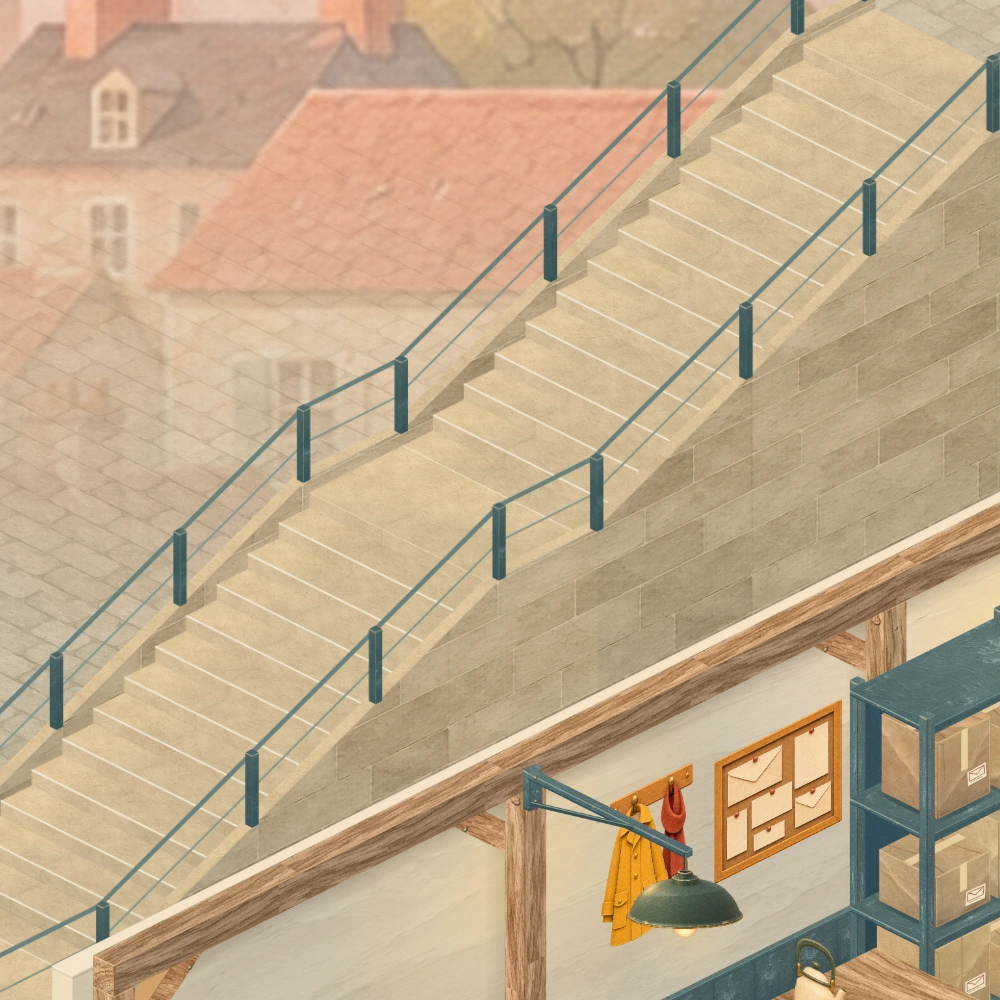
Limestone treads and nosings, jointed retaining stone and painted rails. The stair supports, equal rises and visible middle landing retain their reviewed geometry.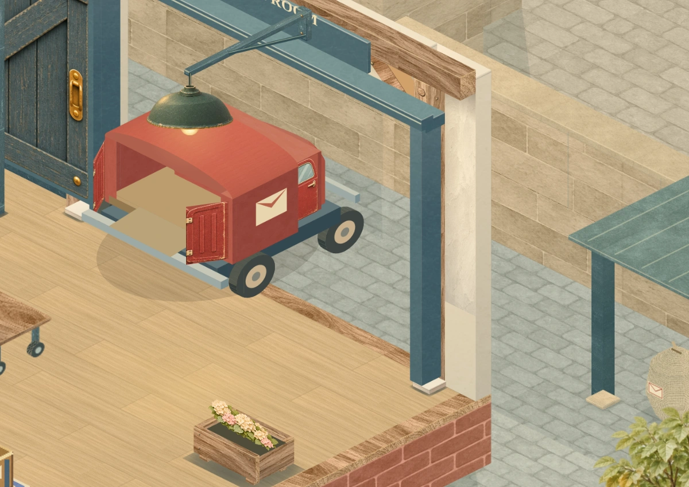
Cool court cobbles meet the room’s timber floor at the threshold. The canopy, store and wheel guard remain clear of the van’s full sweep.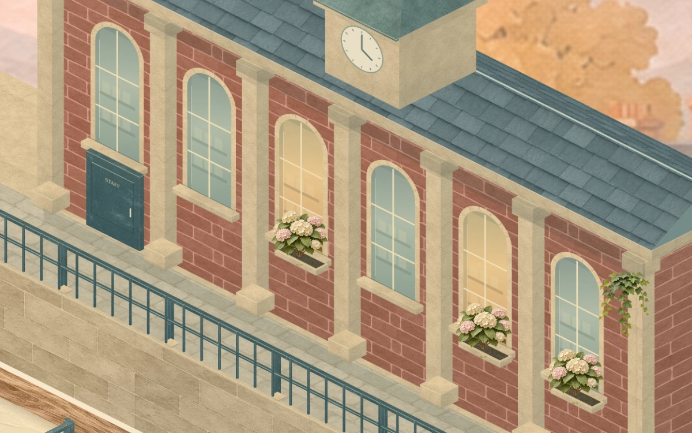
Recessed arched windows, brick piers, limestone dressings, slate roof and lead clock cap. Warm interior glimpses and restrained flowers give the service wing a daily life.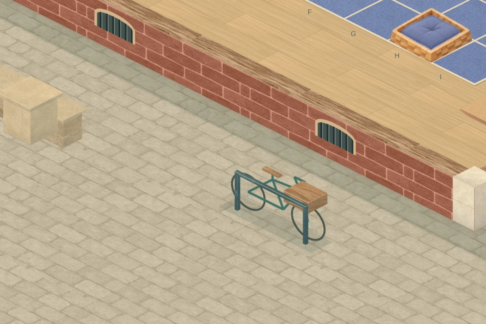
The lower pavement meets the brick foundation. Bicycle wheels, post-box base, tree roots and planting beds have their own receiving surfaces and contact shadows.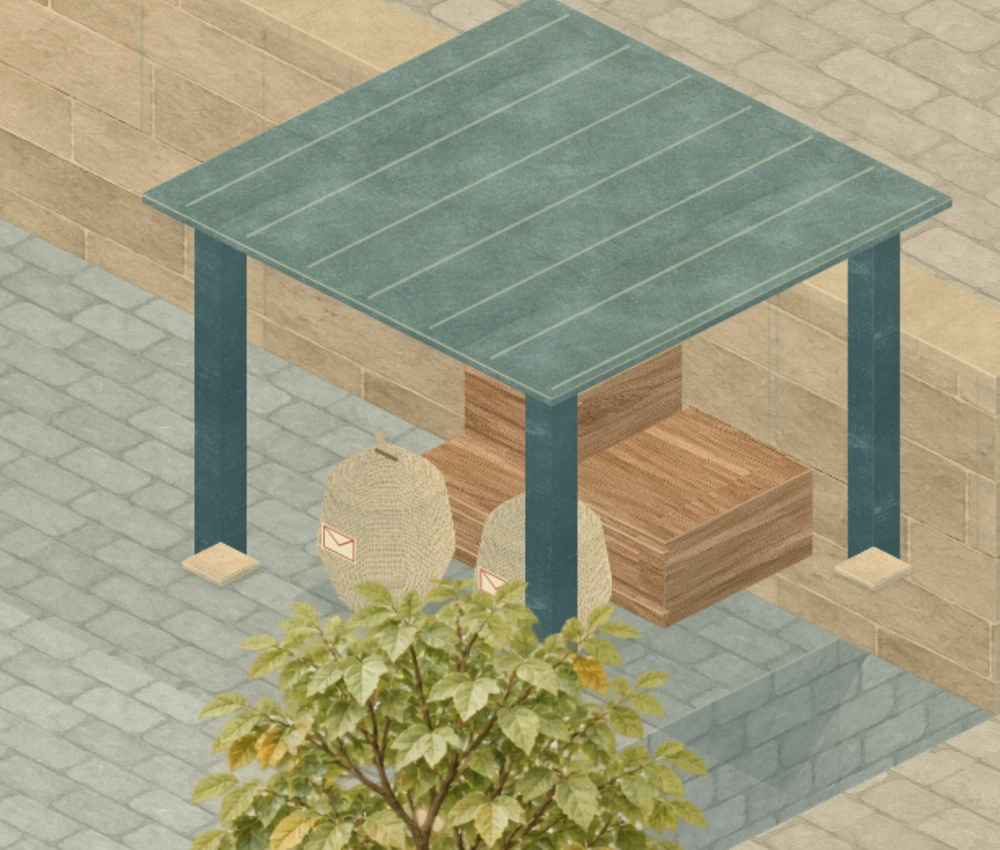
Woven mail sacks, slatted return crates and a seamed metal shelter. Their feet and bases remain on the court; the near posts paint in front of the stored mail.
The same play camera
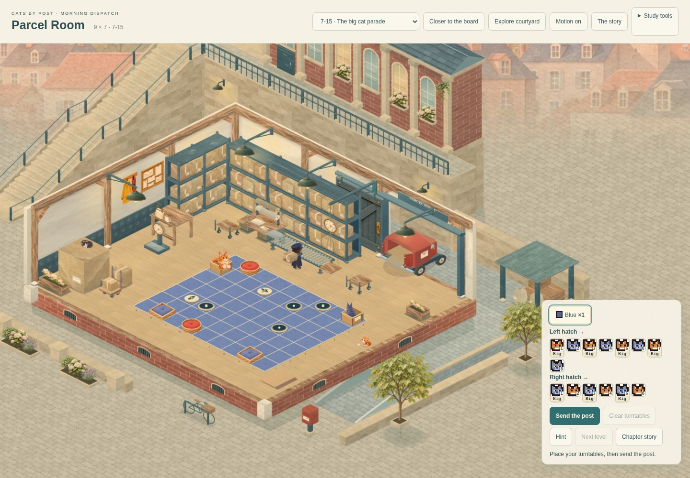
Corrected material and light study, exact previous room camera. The courtyard has a separate inspection view.
The postal loop
The van, worker and parcel retain their native timing and positions. The van now turns visually into and out of its parked heading. Cargo and hand contacts use the original docked mesh. These are actual sampled frames, not an illustration.
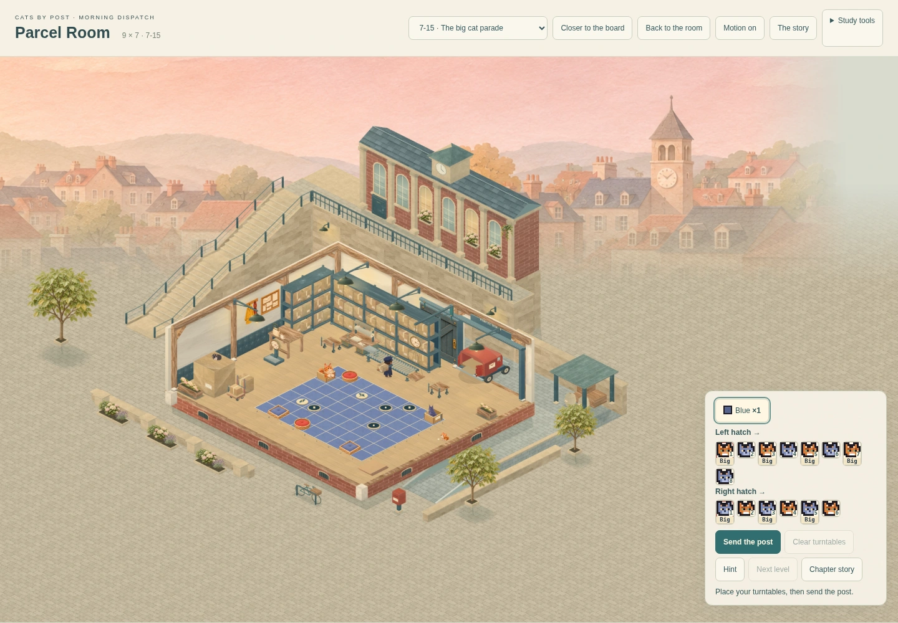
Frame 600 · unloading and sorting.
The turning van, close up
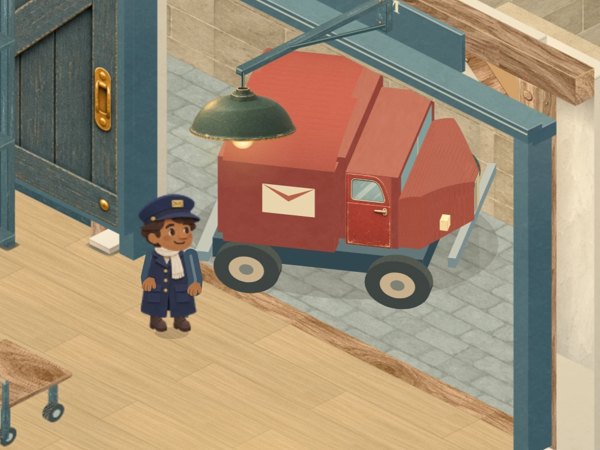
Arrival turn, frame 132. The full 2,880-frame sweep is checked against the wall and receiving floor.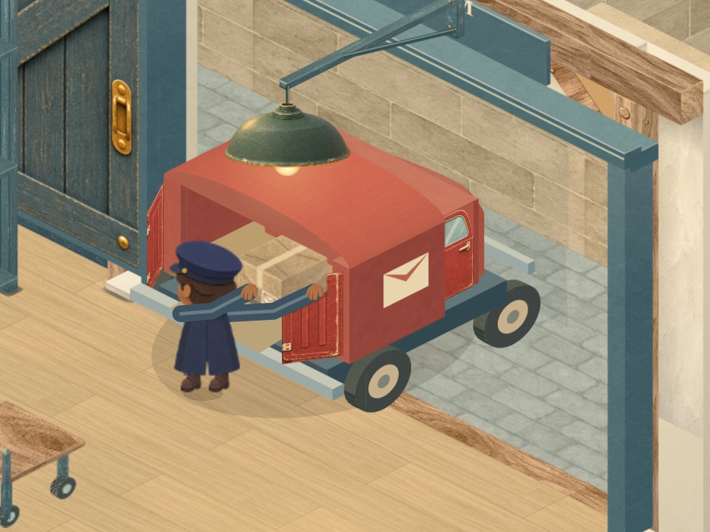
Docked, frame 180. The native loading pose and cargo contacts are retained.Boards, chapters and smaller screens
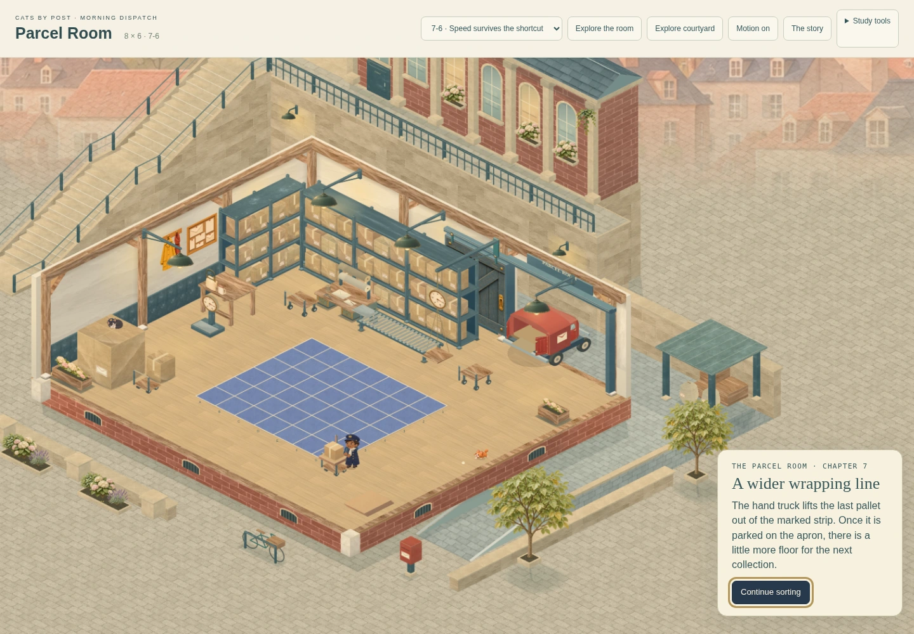
The first board expansion retains the original worker, truck and reveal timing.The second expansion uses the same room and court at the chapter camera.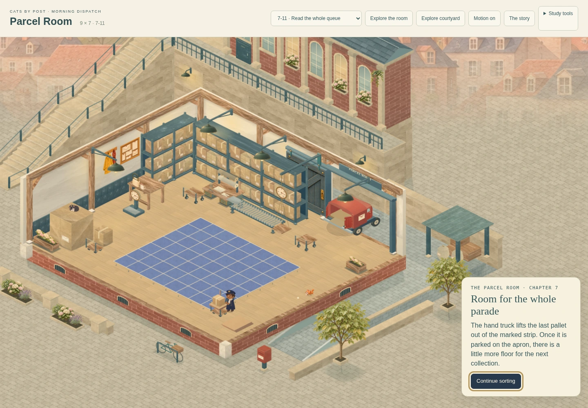
The final expansion prepares the maximum 9 × 7 board. The exit retains the completed board and sends the outgoing post once.
The exit retains the completed board and sends the outgoing post once.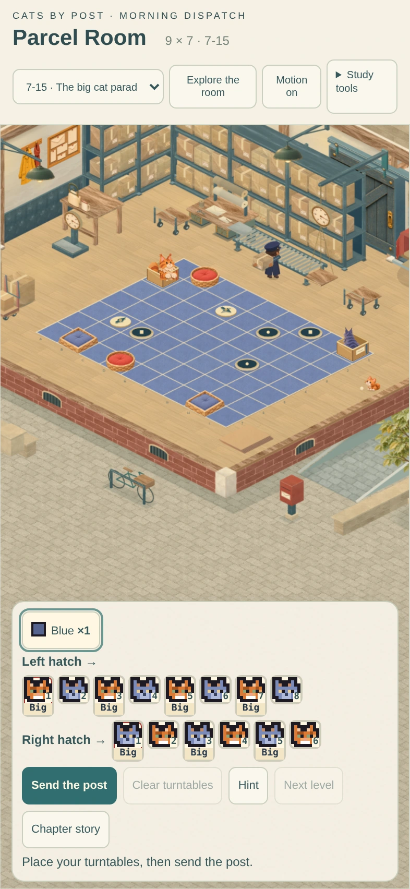
Portrait phone: all 63 cells remain visible and pickable. Running and result keep the same camera.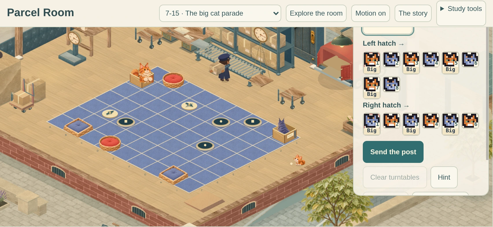
Landscape phone: board and controls keep their reserved space.